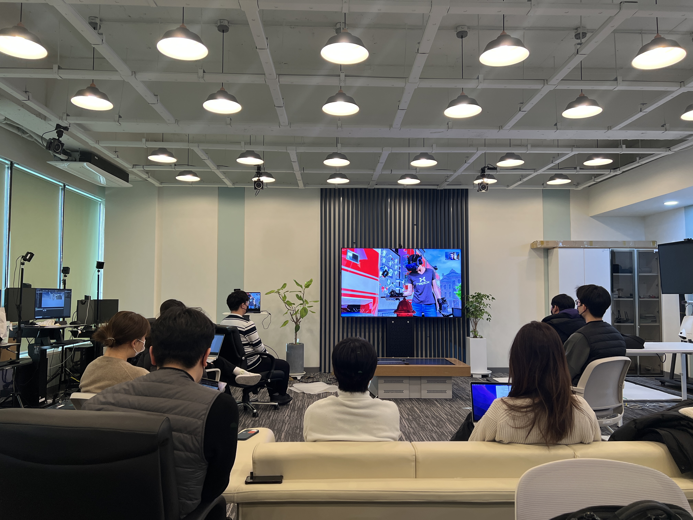
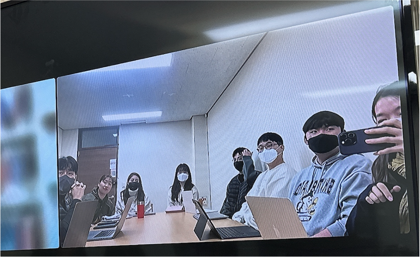
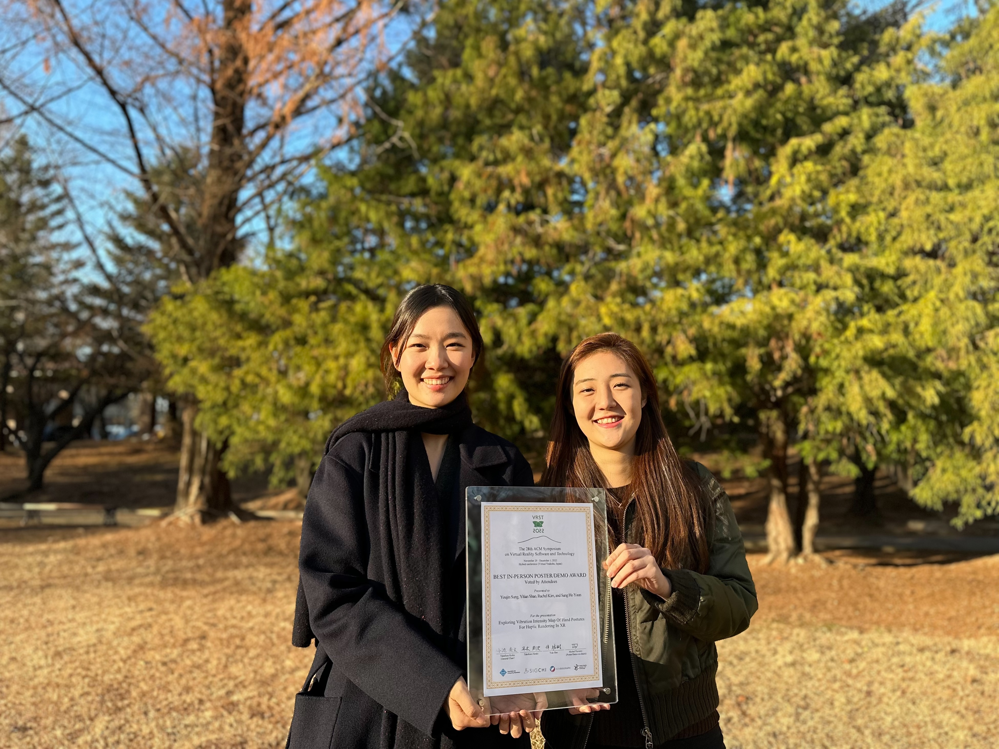
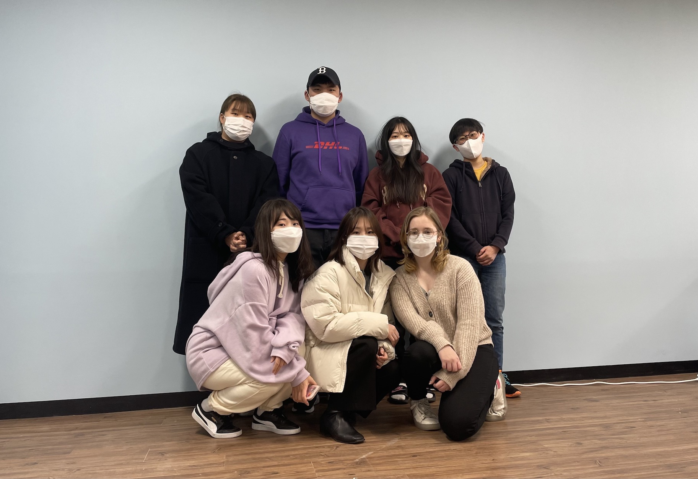

Summer 2023 Undergraduate Research Internship
May 10 2023
We are looking for research interns for 2023 Summer. Application deadline is May 17th. Please check more detail
here.
VR 2023 Participation
Mar 25 2023
Jina, Kyungeun, Nicha participated in IEEE VR conference held in Shanghai to present posters!


Venture Research Program Kick-off
Mar 20 2023
Jina & Minyung's Venture Research Proposal selected!

New Research Project
Mar 17 2023
Outstanding Young Scientist Grants supported by National Research Foundation of Korea (NRF).
Recruiting Graudate Students
Mar 10 2023
We have positions for M.S. & Ph.D for Spring 2023. Please register for information session for Graduate School of Culture Technology

Graduate Students & Intern
Mar 6 2023
Welcome our new Ph.D. student Seo Young Oh (Co-advising), and spring intern Hyunyoung Han!
Graduate Students
Feb 27 2023
Welcome our new MS students Dong Kyu, Min-yung, Hyung Il, Soyeong, and Junghoon!

Graduation
Feb 17 2023
Minjae successfully defended his M.S. Thesis & graduated.

HCI Korea 2023
Feb 3 2023
Our lab participated in HCI Korea 2023!

VR 2023 Posters
Jan 30 2023
Three posters will be presented at
VR 2023.
Read more
HaptX Training!
Jan 20 2023
Our team had HaptX Gloves tutorial training provided by HaptX HQ.

Winter Research Kickoff Meeting
Jan 9 2023
Welcome our new winter interns (Dongkyu, Hyung Il, Soyeong, Min-yung, Kun-woo)

Winter 2023 Undergraduate Research Internship
Dec 7 2022
We are looking for research interns for 2023 Winter. Internship Application deadline is Dec 19th.
VRST Best In-Person Poster/Demo Award
Dec 1 2022
Our
"Exploring Vibration Intensity Map Of Hand Postures" poster wins the Best In-Person Poster/Demo Award Voted by Attendees at VRST 2022!


Recruiting Graudate Students
Sep 15 2022
We have positions for M.S. & Ph.D for Spring 2023. Please check
Open Positions &
KAIST Metaverse program.
VRST 2022 Posters
Sep 7 2022
Youjin's work on vibration intensity map based on hand posture (in collaboration with Technische Universität Dresden) & Zofia's work (URP) on finger-worn haptic actuator will be presented at
VRST2022.
ISMAR 2022 Posters
Aug 22 2022
Three poster papers from
CTP445 class will be presented at
ISMAR2022.
Graduate Students
Aug 29 2022
Welcome our new MS students Kyungjin and Kyungeun!
SIGGRAPH 2022 Emerging Technologies
Jul 4 2022
ECCV 2022
Jul 4 2022
"Sound-Guided Semantic Video Generation" in collaboration with Computer Vision Lab is accepted to
ECCV2022!
Summer Interns
June 24 2022
Welcome summer interns (Dong Kyu, Min-yung, Jungmin)

New Research Projects
June 1 2022
Research projects supported by Korea Creative Content Agency (KOCCA) & National Research Foundation of Korea (NRF).
Undergraduate Research Internship
May 2022
We are looking for research interns for 2022 Summer.
Lab Meeting & Lunch Gathering
Apr 29 2022
Kicked off regular research meeting!


Graduate Student
Mar 2 2022
Welcome our new MS student Youjin!
CVPR 2022
Mar 2 2022
"Sound-Guided Semantic Image Manipulation" in collaboration with Computer Vision Lab is accepted to
CVPR2022!
Winter Interns
Jan 17 2022
Welcome KAIST undergraduate interns (Nicha, Yoonseo, Haebin)
First Lab Meeting
Jan 13 2022
First Lab Meeting including Graduate Students & Undergraudate Interns.

Lab Opening!
Jan 3 2022
Officially opend the lab area. Work-in-progress setting up the lab with members.
URP Invidual Research Selected
Dec 21 2021
Individual Research Proposal by Zofia has been accepted. This is exploratory research to enable Novel Haptic Interface.
Graduate Students
Dec 13 2021
Welcome our new MS student (Minjae) and Interns (Zofia, Kyungeun)
New Research Project
Dec 1 2021
Development of Open XR platform for high immersive collaboration supported by National Research Council of Science and Technology (NST) for 6 years.
Graduate Student
Nov 4 2021
Welcome our new MS student Jina!
Lab Website Open!
Sep 27 2021
Beta version website is open. The website will be actively updated.